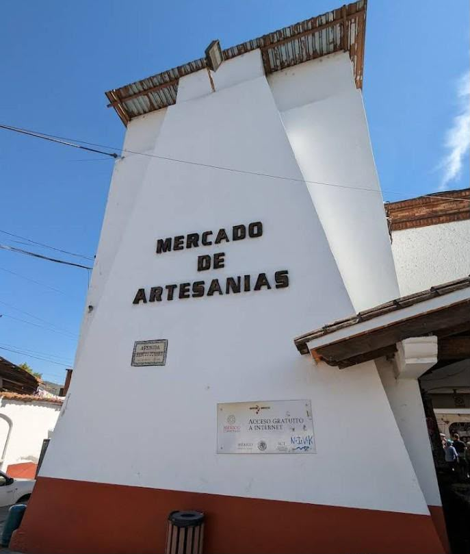
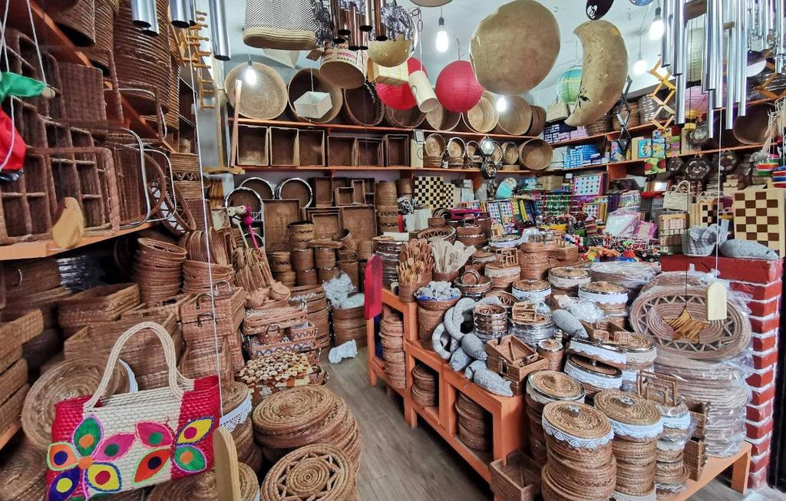

El Mercado de Artesanías de Valle de Bravo es uno de los lugares turísticos y culturales más representativos del municipio. Fue construido en 1984 con el propósito de apoyar a los artesanos locales, promover sus trabajos y conservar las tradiciones de la región.

Dentro del mercado podemos encontrar diferentes productos elaborados a mano: Cerámica de barro: platos, tazas, ollas y objetos decorativos. Hierro forjado: figuras, adornos y artículos decorativos. Bordados: prendas y telas con diseños tradicionales. Tejidos: productos elaborados con diferentes fibras. Cestería de ocoxal: canastas y objetos hechos con hojas de pino. Deshilados: trabajos textiles realizados mediante técnicas artesanales
Importancia económica y cultural El mercado es importante porque permite que los artesanos vendan directamente sus productos y obtengan ingresos por su trabajo. También ayuda a mantener vivas las técnicas tradicionales y a transmitirlas a las nuevas generaciones.
El Mercado de Artesanías de Valle de Bravo es un lugar donde se puede apreciar la creatividad y el talento de los artesanos. Además de ser un sitio para comprar recuerdos, representa una parte importante de la identidad, economía y cultura de Valle de Bravo.
